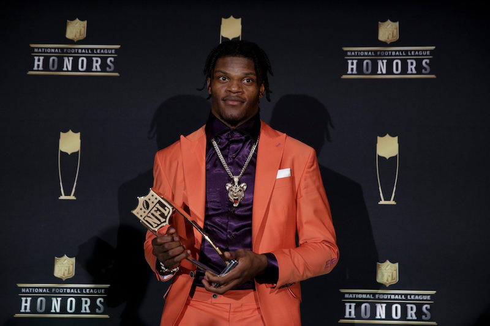
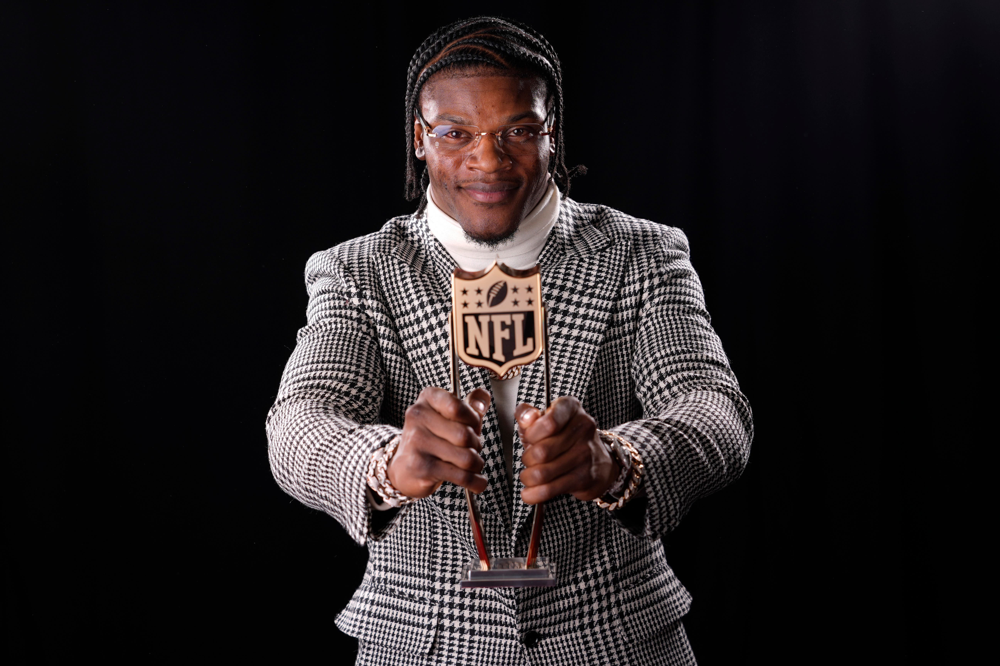

About Him
No. 8 - Baltimore Ravens
Position: Quarterback
Personal Information
Born: January 7, 1997 (age 28)
Height: 6 ft 2 in (1.88m)
Weight: 205 lb (93 kg)
Career Information
High school: Boynton Beach Community
College: Louisville (2015-2017)
NFL draft: 2018: 1st round, 32nd pick
Lamar's MVP Seasons
2019 Season
Jackson was the starting quarterback at the 2020 Pro Bowl in Orlando, Florida. He threw for 185 yards and two touchdowns with one interception and was named the offensive Most Valuable Player. Jackson became the youngest quarterback in NFL history to start a Pro Bowl game.[118]
Jackson was voted the MVP of the 2019 season.[119] He became the second player after Tom Brady in 2010 to be voted unanimously[120][121][122][123] and the second-youngest player to win, behind only Jim Brown.[119] Jackson, along with Patrick Mahomes, Cam Newton and Steve McNair, is one of the four African-American quarterbacks to win the AP MVP award.[124]
2023 Season
During a Week 16 33-19 road victory over the top-seeded San Francisco 49ers on Christmas Day, Jackson threw for 252 yards, two touchdowns, and no interceptions for a 105.9 passer rating while also leading Baltimore with 45 rushing yards.[179] In the next game against the Miami Dolphins, Jackson was named AFC Offensive Player of the Week[180] after posting a perfect passer rating for the third time in his career, completing 18 of 21 passes for 321 yards, five touchdowns, and no interceptions during a 56–19 victory. [181] The win also clinched the top-seed in the AFC and the AFC North championship for the first time since 2019.[182]
On January 3, 2024, the Ravens announced that Jackson would be inactive for the final game of the regular season. He finished the regular season with career highs in pass completions, completion percentage, and passing yards. [183] Jackson won his second NFL MVP in a near-unanimous decision, receiving 49 of 50 first-place votes. At the age of 27, Jackson became the second-youngest player to win multiple MVPs, behind Jim Brown.[184]